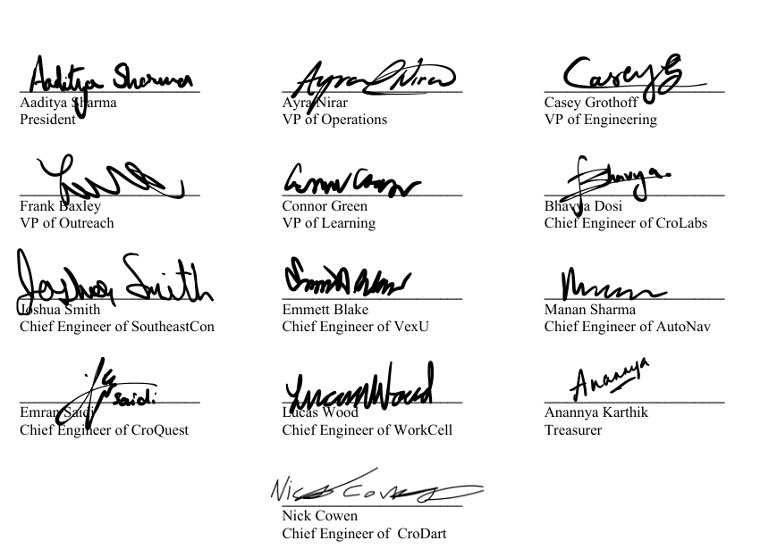

VT CRO · Executive board
Exec Hub
Quick reference
Click any value to copy it.
| ECE fund number | Kathy Atkins |
|---|---|
| ECE PI | |
| ECE ship-to | Ground shipping |
| ME purchasing contact | |
| ISE fund number | LeClaire fund |
| ISE faculty approver | |
| Purchase order note | Set your team on the Purchasing page |
Operations
Ordering parts
Pick a payment method, follow the steps for your department, then log the purchase.
Log every purchase, every time
Fill out the purchase log form for every purchase, no matter where you bought it or how you paid.
1. Choose how to pay
- 1st choice
Department purchase
Order through ECE, ME or ISE. Preferred over the CRO card.
Preferred - 2nd choice
CRO debit card
Use when a department order won't work.
- 3rd choice
Personal card
Reimbursement is slow and a lot of work.
Last resort
2. Order through a department
Fills in the purchase order note below:
Purchase request through ECE
9 stepsConnect to eduroam or the VT VPN
The ECE portal only loads on the campus network.
Enter your details and the fund
- Your email and name
- Fund number: (Kathy Atkins)
- PI:
Add vendor information, then click Submit
Enter the vendor name and vendor website. Put in every other vendor field.
Enter the product number, then click Submit
Most part websites list the product number on the component page. On Amazon, it's the code after
/dp/in the URL.amazon.com/ZHONGXIN-MADE-Crow-Plush-Toy/dp/B0CF1SLH14/ref…
Product number:B0CF1SLH14Set shipping
- Select ground shipping
- Deliver to
Add the purchase order note
In the notes and additional fields section, write:
Submit the purchase order
Purchase request through ME
3 stepsMake a parts sheet
Create an Excel file or sheet with these four columns:
Part Link to Part Part Price Quantity Paste into the first cell of a spreadsheet and the headers fill four columns.
Email the sheet to the ME contact
- To:
- Mention:
- Attach the parts sheet
If the draft doesn't open, copy the address above.
Purchase request through ISE
5 stepsEnter the fund
- Fund number:
- Mention and
Set the faculty approver
Fill out all other details and submit
Tip: click a step number to check it off.
Operations
Lab access
Every member who needs lab access fills out the lab access form. Lab access is step 7 of onboarding and is revoked during offboarding.
Getting someone lab access
Have them fill out the lab access form
Check that their response came in
The responses spreadsheet shows everyone who has filled out the form.
Full onboarding and offboarding checklists are in Article XI of the constitution.
Governance · Ratified 2026
Constitution of the Virginia Tech Competitive Robotics Organization
Full text of the signed 2026 constitution.
- IName
- IIMission, Purpose, & Core Values
- IIIOrganizational Structure
- IVExecutive Positions and Responsibilities
- VSubteam RSOs
- VIEssential Events
- VIIDesign Teams and Support Teams
- VIIIPresidential Checks
- IXConstitutional Amendments
- XSuccession
- XIMember Onboarding/Offboarding
- XIITeam Transfers
- XIIIMentors
- XIVFinance and Budgeting
- XVGeneral Recruitment
- XVISponsors
- XVIIAdvisory Board
- XVIIIRatification
- —Signatories
Art. IName
The organization defined in this constitution shall be known as the “Competitive Robotics Organization at Virginia Tech” or “VT CRO”, hereafter referred to in this document as “VT CRO”, “this organization”, and “the organization”.
Art. IIMission, Purpose, & Core Values
Mission
VT CRO’s stated mission is to Improve the presence of robotics at Virginia Tech and surrounding communities.
Purpose
The purpose of VT CRO is as follows:
- Provide operational support to a portfolio of design teams, primarily in robotics, to compete and win in competitions throughout the world.
- Improve the presence of robotics at Virginia Tech and surrounding communities.
- Represent Virginia Tech’s students in the arena of national and international robotics.
- Develop students to become the best engineers and leaders possible.
Core Values
VT CRO’s 3 Core Values are defined as follows:
- Reliability: We are committed to building things that are designed to work over a long period of time, from the robots we build, to the structure of the organization we represent.
- Simplicity: Through simplicity and reduction of complexity, things become easier to understand, more reliable, and easier to bring to reality.
- Modularity: Modularity brings the possibility of layering sophisticated systems in an elegant and simple way. It also allows for parallel development of subsystems at scale.
Art. IIIOrganizational Structure
The Organizational Structure of VT CRO shall be defined as follows:
Org Chart
To accommodate a modular structure of VT CRO, a variable number of design teams and support teams are supported. VT CRO’s organizational structure is as follows:
- President
- VP of Operations
- Treasurer
- Operations Team
- VP of Engineering
- Chief Engineer of [Design Team]
- Design Team
- Embedded Operations Person
- Chief Engineer of [Design Team]
- Design Team
- Embedded Operations Person
- …
- Chief Engineer of [Design Team]
- VP of [Support Team]
- Support Team
- VP of [Support Team]
- Support Team
- …
- VP of Operations
★ Executive
Member Progression
To ensure the continuous transfer of technical expertise and institutional knowledge across successive design cycles, active members should typically advance through the organization according to the following progression:
- Team Member
- Sub team Lead
- Chief Engineer
- Executive Board Member or Senior Mentor
The progression outlined in this section serves as a framework for leadership development. Any deviation from this path - including the expedited promotion or alternative placement of a member - shall be considered an extenuating circumstance. Such exceptions require the formal review and joint approval of both the Vice President of Engineering and the President.
This tiered structure is established to facilitate a "trickle-down" mentorship model. By maintaining this sequence, the organization ensures that specialized knowledge accumulated during previous engineering milestones is effectively preserved and distilled for the benefit of incoming cohorts.
Executives
The Executive group of VT CRO is the top staff entrusted to execute the mission and objectives of VT CRO. The members included in this group are:
- President
- Treasurer (reports directly to VP of Operations)
- All VPs (reporting directly to the President)
- All Chief Engineers (reporting directly to the VP of Engineering)
Design Teams
A Design Team is a team that is tasked with building an engineering project and will be placed in the organization directly under the VP of Engineering and President. Any number of design teams may be placed under the VP of Engineering.
Support Teams
A Support Team is a team that provides a different value to the organization, such as offering workshops and running outreach events. These teams will report directly to the President. Any number of these support teams may be placed under the President.
Operations Team
The operations team shall handle finances, fundraising, the organization of travel to competition, general upkeep of the organization, planning and executing social events, advertising, and the bulk of stakeholder communication.
Art. IVExecutive Positions and Responsibilities
President
The President serves as the leader of VT CRO, setting the direction and objectives of the organization, and ensuring proper execution. Due to the powers entrusted to the President, the success of the organization is ultimately their responsibility. They must be an undergraduate at the beginning of each academic year they serve and must be enrolled at Virginia Tech during each entire year.
The President of VT CRO is authorized by this constitution the following powers to best effectively serve the organization:
- Appoint non-executive members to the organization.
- Dismiss any non-executive member within the organization.
- Appoint executives to the organization.
- Dismiss executives from the organization, only if seconded by either the VP of Operations (VPO) or VP of Engineering (VPE).
- Serve as the principal representative of VT CRO.
- Responsible for Chief Engineer transition as outlined in Article X.
- Holds the ultimate decision-making authority within VT CRO*.
*Limits to this power are outlined in Article VIII.
VP of Operations (VPO)
The Vice President of Operations (VPO) shall oversee all logistics and support the execution of VT CRO’s mission and objectives. They must be an undergraduate at the beginning of each academic year they serve and must be enrolled at Virginia Tech during each entire year.
The VP of Operations (VPO) of VT CRO is authorized by this constitution for the following powers to best effectively serve the organization:
- Full oversight of the Operations team, including the appointment and dismissal of members.
- Maintains organizational branding standards and ensures consistency across all materials and communications.
- Control over the VT CRO bank account.
VP of Engineering (VPE)
The Vice President of Engineering (VPE) is responsible for enforcing engineering standards across all VT CRO design teams, ensuring adherence to the organization’s core principles of reliability, simplicity, and modularity. The VPE also serves as the primary liaison between the President and VT CRO’s Chief Engineers. They must be an undergraduate at the beginning of each academic year they serve and must be enrolled at Virginia Tech during each entire year.
The VP of Engineering (VPE) of VT CRO is authorized by this constitution for the following powers to best effectively serve the organization:
- Serve as the primary liaison between the President and Chief Engineers.
- Upholds engineering standards across all VT CRO design teams.
- Ensures adherence to VT CRO’s core design principles of reliability, simplicity, and modularity.
- Provides technical oversight and support to teams to maintain consistency and quality.
- Responsible for Chief Engineer transition as outlined in Article X.
Treasurer
The Treasurer is responsible for the financial position of the organization. They will work with all executives to provide updated information. They must be an undergraduate at the beginning of each academic year they serve and must be enrolled at Virginia Tech during each entire year.
The Treasurer of VT CRO is authorized by this constitution the following powers to best effectively serve the organization:
- Access to bank account and financial accounts of the club.
Chief Engineers
Each Chief Engineer serves as the leader of a design team within VT CRO. Chief Engineers operate on an academic-year design cycle. While they maintain final authority over team operations, they collaborate with the VP of Engineering and the President on high-level strategic decisions, such as personnel appointments, dismissals, and competition selection.
The Chief Engineers of VT CRO are authorized by this constitution the following powers to best effectively serve the organization:
- Full oversight over their own design team, including competition selection, appointing members, managing scheduling, and dismissing members.
- Oversight to spend their authorized budget on necessary materials and travel expenses.
- Ensuring their team is on track to meet the team’s goals and objectives.
- Chief Engineers are contracted on a single academic-year design cycle.
Support Team VPs
Each Support Team VP serves as the leader of a support team within VT CRO. The Support Team VPs of VT CRO are authorized by this constitution the following powers to best effectively serve the organization:
- Full oversight over their support team, including appointing, managing, and dismissing members.
- Oversight to spend their authorized budget on necessary materials and travel expenses.
Art. VSubteam RSOs
Each design team or support team may exist as its own RSO to best reflect its own separate material, space, and travel needs. These RSOs must always have the same President, VP of Operations, and VP of Engineering as VT CRO, with the President as the final decision maker. Any changes to the titles or roles within this RSO must be given in written permission from the President of VT CRO. The constitution of this RSO must adopt the constitution outlined in this section.
RSO Constitution
Article I: Name
This organization shall be known as Virginia Tech Competitive Robotics Organization.
Article II: VT CRO
This organization shall exist under the structure of the Virginia Tech Competitive Robotics Organization (“VT CRO”). This organization will honor VT CRO’s constitution, including all updates to it. This constitution must be ratified by a 2/3 majority of the current VT CRO executive board.
Article III: Positions
This organization shall have 5 leadership positions, as listed below.
President
The President shall be whoever currently holds the position of President of VT CRO. They are the final decision maker of this organization and are solely able to make changes to this constitution.
Chief Engineer
Shall be appointed by the President on formation of a new design team. This position may be renamed to the most relevant name, such as Chief Engineer of AutoNav. They are responsible for the leadership of this organization.
VP of Operations
The VP of Operations shall be whoever currently holds the position of VP of Operations of VT CRO.
VP of Engineering
The VP of Engineering shall be whoever currently holds the position of VP of Engineering of VT CRO.
VP of Support Team
The VP of Support Team shall be whoever currently holds the position of VP of that support team of VT CRO.
Treasurer
The Treasurer is appointed by the VP of Operations and is usually a member of the Operations team of VT CRO. They will act as Treasurer of this organization and will be given responsibilities from the VP of Operations and President. The President may decide to have the Treasurer report to the VPO or President.
Art. VIEssential Events
There will be various important events throughout the academic year; these events shall create a framework and pace for the organization. Smaller teams may be established to carry out the planning and execution of each event, and exactly one person shall be appointed to be overall responsible for the event’s success, usually the VP of Operations. The events suggested for implementation are as follows:
Fall Events
O-Show
VT CRO’s presence as O-Show will be its first event of the year. Similarly to GobblerFest, its principal purpose is to recruit talented students.
GobblerFest
VT CRO’s presence as GobblerFest will involve flyers to apply to the organization and a robot to demonstrate during the event.
Picture Day
Headshots for all VT CRO members should be taken over the course of one day, with a retake day one week later. Headshots will be taken after the Fall recruitment cycle is over.
Spring Events
VEX Competition
VT CRO should hold a VEX competition each year, with back-to-back VEX U (college) and VRC (High School) competitions.
CRO Expo
Near the end of the school year, VT CRO will host CRO Expo, inviting all members, stakeholders, and any other interested party. All projects made over the course of that academic year should be demonstrated. All VT CRO design teams must exhibit. Other successful design teams from Virginia Tech may be invited to participate.
Merch and Cords
Based on the financial position of the organization, to be determined by the VPO and Treasurer, merch should be purchased for the entire organization featuring VT CRO branding. Graduation cords should be bought for graduating seniors part of VT CRO.
Art. VIIDesign Teams and Support Teams
Design Teams and Support Teams can be added or removed by the President, but any such decision must receive approval from the Vice President of Engineering (VPE) and the Vice President of Operations (VPO) to take effect. All teams, executives, and members must be listed publicly.
Art. VIIIPresidential Checks
To ensure a balanced distribution of authority within VT CRO, the following measures are established to check the power of the President and maintain the integrity of the organization:
Presidential Removal Procedure
- Either the VP of Operations (VPO) or the VP of Engineering (VPE) can propose the removal of the President at any time if they believe it is in the best interest of the organization.
- Upon such a proposal, all executives will be notified, and a meeting will be set up for the removal proposal to be discussed and voted upon.
- A vote will be held among the executives. A simple majority vote of the executives in favor of removal is required to remove the President from their position.
- If the President is removed, either the VP of Operations or the VP of Engineering will immediately assume the role of President and may appoint a new VP to succeed them.
Limitations on Presidential Authority
The President’s authority to dismiss the VP of Operations (VPO) or VP of Engineering (VPE) must be seconded by either the VPO or VPE to be valid.
Executive Oversight
The VPO, VPE, and rest of the executive board are entrusted with the responsibility of ensuring that the President’s decisions align with the mission and objectives of VT CRO. If an executive member believes a decision was made harmful to the organization, they may call an executive meeting for the issue to be discussed. There, the VPO or VPE and the President will present their reasoning regarding the decision, and the executive board will vote to overturn the President’s decision (simple majority required). At these meetings, 2/3 of the executive board must vote, with an option to vote virtually.
Art. IXConstitutional Amendments
Amendments to this constitution may be proposed by either the President, VPE, or VPO. Once proposed, the amendment must be discussed and voted upon by the executive team. A two-thirds (2/3) majority of the executives are required for the amendment to be adopted and incorporated into the constitution.
Art. XSuccession
During the President, VPO or VPE’s graduating semester
Application is created and sent to all VT CRO members allowing them to apply to fill the top 3 executive positions:
- President
- VP of Operations (VPO)
- VP of Engineering (VPE)
Everyone who applies must be granted an interview with the current officer of whichever positions they applied to. If someone applies to multiple positions, they must be interviewed for each position they apply for by the respective officer.
President, VPO, and VPE convene.
The three will discuss which three candidates will succeed them. Once a list of 3 candidates is proposed and at least 2 of the 3 top executives confirm it, the outcome becomes official.
Outcomes are advertised by the next day. Replacements will be trained until the last day of classes, when the transition becomes official.
Each Support VP and Treasurer (VP of Outreach, VP of Learning) proposes a successor, which will be confirmed by at least 2 of the 3 top executives, one of which must be the President. New Support VP is trained by current Support VP.
After Competitions, Before End of Semester
Each Chief Engineer nominates a successor sometime after their competition or end of their design cycle and before the end of the semester, which will be confirmed by at least 2 of the 3 top executives, one of which must be the President. New Chief Engineers are trained by current Chief Engineers. Chief engineers must nominate a successor after their tenure of one full design cycle.
Art. XIMember Onboarding/Offboarding
Onboarding Process
- Member must be notified and must formally accept an offer before being onboarded.
- Member will be assigned to a team by appropriate executive.
- Ensure if the member has a graduate standing, it doesn’t have possible rule conflicts in competitions.
- Added to any communication platform used.
- Added to any file-sharing platform.
- Inform VP of Operations to add to membership database.
- Given Lab Access (lab access form)
- Added to website.
- Assigned a mentor.
Offboarding Process
- Members formally notified via email of being Offboarded.
- Removed from communication platform.
- Removed from any file-sharing platform.
- Removed from website.
- Inform VP of Operations to remove from membership database.
- Lab access revoked.
Art. XIITeam Transfers
If a member would like to transfer teams, they may be transferred as long as the executive of their desired team agrees, or the request is approved by the President. Then, all executives involved must be notified by the executive of the new team and old team.
Art. XIIIMentors
When a new member is added to VT CRO, they shall be assigned a mentor to meet 1-on-1 with the new person within their own team to get them up to speed in the organization on both a social and engineering level. For senior design teams, this will not be necessary.
This mentor role should be done ideally on a volunteer basis; however, mentors can be appointed directly by the executive of the team.
Art. XIVFinance and Budgeting
The financial structure of VT CRO will work as follows:
- At the beginning of the year, only essential purchases will be made while teams develop their ideas.
- Around mid-September, exact date as decided by the President, each design and support team will submit a budget request, listing the items they need and the total cost. This will not include travel.
- Budgets will then be allocated to each team based on their requests.
- Executives will be given information on how to make purchases (see Purchasing); purchases will largely be made through either –
- Department Purchase
- CRO Debit Card
- Personal Card, to be reimbursed
- As the year continues, budgets will expand to account for purchases and travel expenses. This will be overseen by the VP of Operations.
The treasurer will be involved in all financial decisions and matters of VT CRO.
Art. XVGeneral Recruitment
While most executives have the authority to appoint members within their teams, the selection and recruitment process can be challenging. To ensure a steady flow of talent into VT CRO, a general recruitment will be held each fall, following this procedure (unless directed otherwise by the President):
- VT CRO will participate in O-Show and GobblerFest.
- All Chief Engineers and VPs of support teams are responsible for drafting a preliminary recruitment breakdown. This should outline the total desired headcount and provide a specific distribution across disciplines.
- Applications will close early in fall to allow for recruitment to finish before design teams progress too far in the design cycle.
- VT CRO will host an interest meeting and speak at relevant classes to drive application interest.
- The executive committee comprised of any interested executive will review submitted resumes and select candidates for interviews. At least 2 people should independently review each resume.
- Interviews will be conducted to assess the suitability of the candidates.
- Decisions will be made on which candidates to extend offers to, as well as determining their team placements.
- After all offers have been accepted or declined, rejection emails will be sent to those not selected, informing them of the outcome.
- After general recruitment is over, members may still be recruited and onboarded by individual executives on an ad-hoc basis, but no general applications will be open for all of VT CRO.
Art. XVISponsors
The President shall be mainly responsible for fundraising from corporations. Companies may be granted certain benefits depending on how much they contribute towards the organization.
Art. XVIIAdvisory Board
A VT CRO Advisory Board comprised of faculty and industry people may be formed. It will schedule meetings to discuss strategy to improve the organization and may recommend actions to the executives of VT CRO.
Art. XVIIIRatification
This document shall be ratified 2/3rds majority of all executives per the current constitution. This new constitution will become the official constitution of the club effective immediately on being ratified.
SignedSignatories
- Aaditya SharmaPresident
- Ayra NirarVP of Operations
- Casey GrothoffVP of Engineering
- Anannya KarthikTreasurer
- Frank BaxleyVP of Outreach
- Connor GreenVP of Learning
- Manan SharmaChief Engineer of AutoNav
- Nick CowenChief Engineer of CroDart
- Bhavya DosiChief Engineer of CroLabs
- Emran SaidiChief Engineer of CroQuest
- Joshua SmithChief Engineer of SoutheastCon
- Emmett BlakeChief Engineer of VexU
- Lucas WoodChief Engineer of WorkCell
View the signed signature page
